Measuring Electronic Resource Availability
Sanjeet Mann
University of Redlands
SCELC Research Day
March 5, 2013
Armacost Library infrastructure
- ILLIAD interlibrary loan system
- Full text targets (databases, ejournals): 79,757 unique titles
- Serials Solutions 360 Link
- A&I databases: 77,000 titles indexed
- Innovative Interfaces catalog/proxy: 263,575 book/serial titles
Why do electronic resource errors matter?
- Costs
- Frustrated expectations
- Undermined confidence
- Complicated instruction
Research question
"How often does full text linking work?"
Availability studies
- Sample of items
- Available? Yes/No Error?
- Order encountered
- Probabilities
- Prioritize fixes
Development of the availability technique
- Print material availability: Card catalog user surveys (Reviewed in Mansbridge 1986, Nisonger 2007)
- Linear sequence (De Prospo 1973)
- Branching model (Kantor 1976)
- Applied to e-resources: 500 articles from 50 high impact journals (Nisonger 2009)
OpenURL performance
- OpenURL-based reasons for availability error (Wakimoto et al 1998)
- "Digging into the Data" on link resolver failure (Trainor and Price 2010)
- NISO initiatives: KBART, IOTA, PIE-J (Chandler et al 2011, Glasser 2012, Kasprowski 2012)
Usability studies focusing on e-resources
- Database link pages (Fry 2011, Ponsford et al 2011b)
- Resolver menus (O'Neill 2009, Imler & Eichelberger 2011, Ponsford et al 2011a)
- Discovery services (Williams & Foster 2011, Fagan et al 2012)
- Entire process (Kress 2011)
Methodology
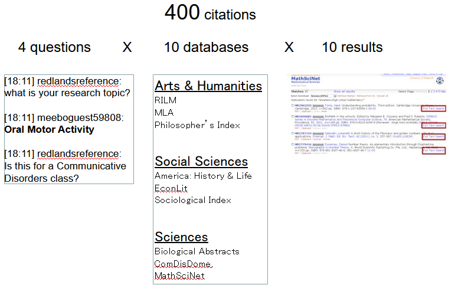
Link testing
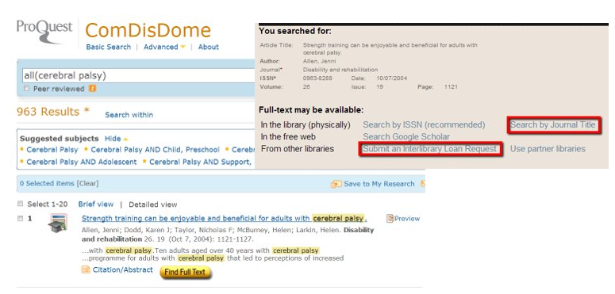
Error coding
- What is an error?
- Six error categories
- Updated criteria
Armacost Library failure points: P vs O
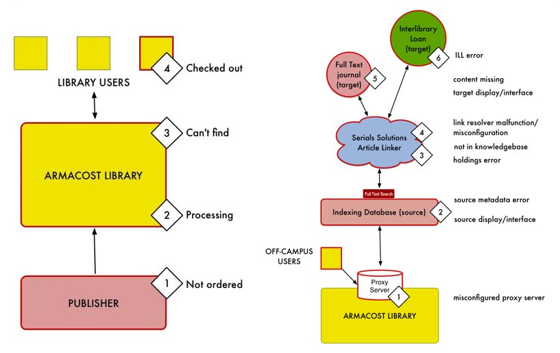
Error details 1: Proxy errors
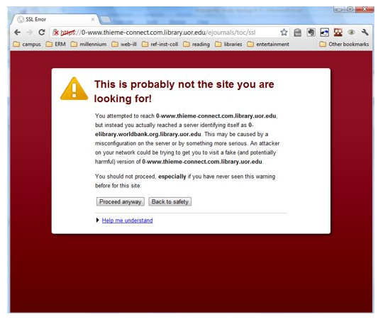
- Domain missing from forward table
- Domain missing from SSL certificate
- Timeouts trying to establish connection
Error details 2: Source errors
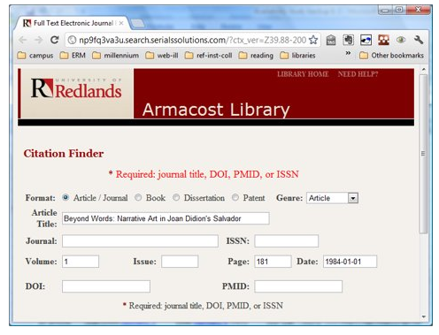
- Missing metadata
- Erroneous metadata (e.g. rft.date=0001-01-01)
Error details 3: Knowledge base errors
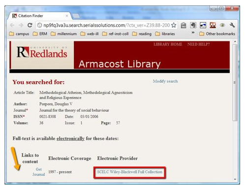
- Title not selected in knowledge base
- Title selected, but in poorly chosen collection
- Knowledge base holdings do not reflect access entitlement (embargo, back issues, etc)
Error details 4: Link resolver error
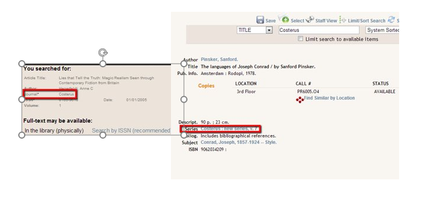
- Confusion between two similar titles
- Unusual OpenURL syntax
Error details 5: Target errors
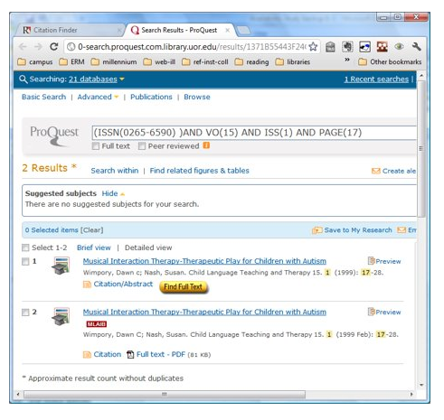
- Content not loaded (supplement, embargo)
- Records concatenated from full text and non-full-text databases
- Server downtime
Error details 6: ILLIAD errors
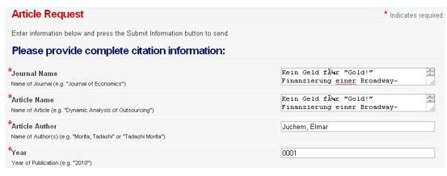
- Unicode metadata not displayed properly
- rft.title used for both book title and article title (affects chapters and dissertations)
Results
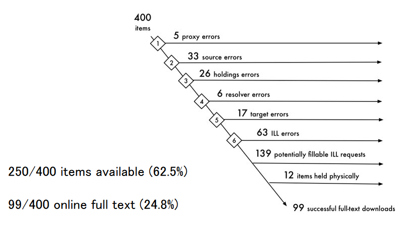
Sampling
Necessary sample size for a yes/no condition is determined by:
\[n=p(1-p)(\frac{z_c^2}{E^2})\]
To use this, you need:
- Availability rate from a small pre-test
- Choose acceptable % confidence (95%)
- Choose acceptable margin of error (+/- 5%)
Plug values into the formula...
- \(p\) = 0.625 (250/400 successes)
- \(1-p\) = 0.375 (150/400 errors)
- \(C\) = 0.95 (95% confidence)
- \(z_c\) = 1.96 (statistical textbook or an online table
- \(E\) = 0.05 (5% error)
Confidence
Your confidence in a study of a particular sample sizes is given by:
\[z_c=E\sqrt{\frac{n}{p(1-p)}}\]
(rewritten from previous formula, plug in values as before)
Use table of areas under a standard normal curve to convert \(z_c\) to a confidence probability.
Discussion
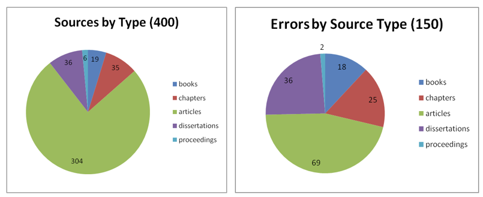
Discussion (continued)
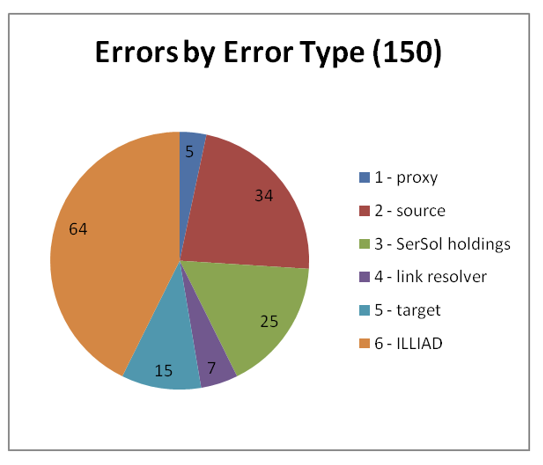
Availability/Error by Discipline
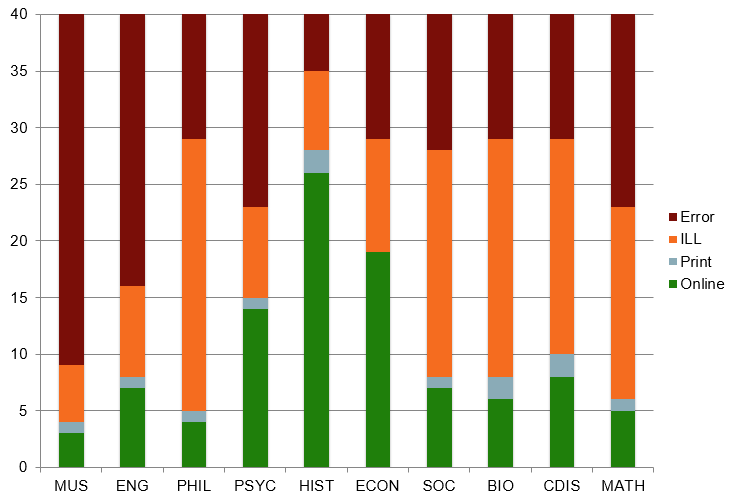
Solutions
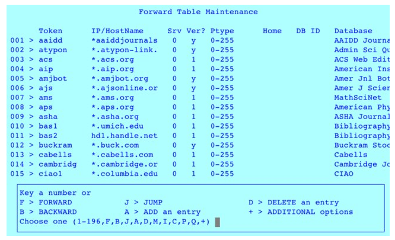
Edit proxy forward table
Solutions
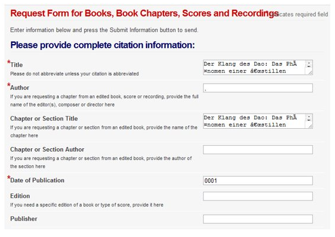
Upgrade ILLIAD
Solutions
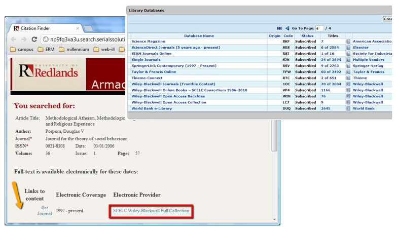
Customize Serials Solutions
Solutions
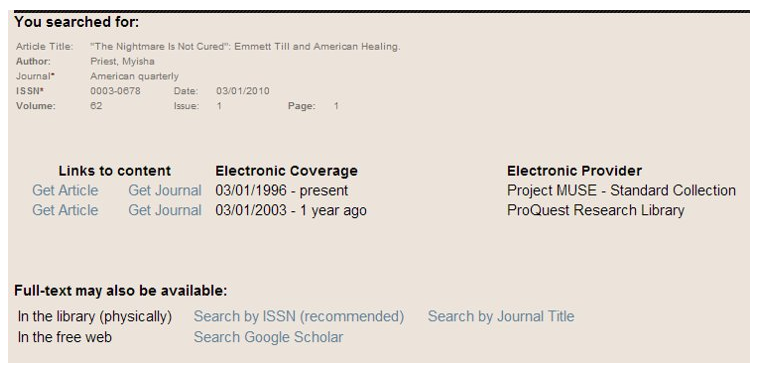
Simplify result screen interface and terminology
Summary
- 400 citations obtained through likely keyword searches of 10 A&I databases
- 62.5% availability (98% confidence, +/- 5%)
- 24.8% downloadable full text
- Responses include fixing proxy, kb holdings, interfaces, upgrading systems
- Strengths: quant+qual data, very flexible (n=100 allows 85% confidence)
- Weaknesses: Does not account for interface problems, searching, or evaluation by actual users
Towards availability testing with live students

- More barriers
- confusing interfaces
- difficulty formulating searches and evaluating sources
- login errors
- How to test
-
- cognitive walkthrough + recorded task protocols
- analysis informs information literacy and interface design
- Deliverables
-
- availability %
- branching model
- usability report
Questions
Works cited and data set at (dead link)